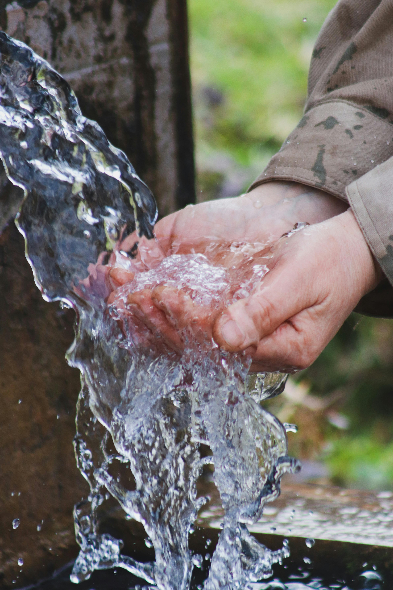

NOS MISSIONS PRINCIPALES
Les objectifs et les grandes missions sur lesquels repose le projet "Agissons pour la Santé":
| Icône / Image | Mission | Description | Impact attendu |
|---|---|---|---|
| Accès aux Soins primaires | Apporter des médicaments aux zones enclavées | Zéro village sans assistance médicale | |
 |
Eau Propre et Hygiène | Installer des puits et des filtres à eau | Réduction des maladies diarrhéiques |
| Santé Maternelle | Suivi gratuit des femmes enceintes | Diminution de la mortalité infantile | |
 |
Réponse aux Urgences | Interventions rapides lors des épidémies | Prise en charge en moins de 24 heures |